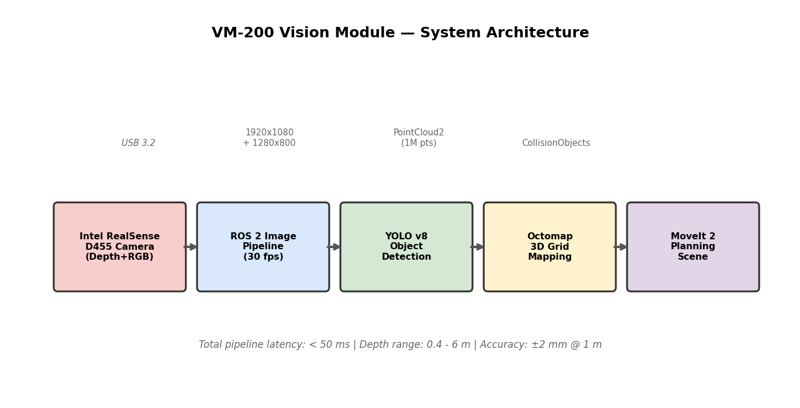
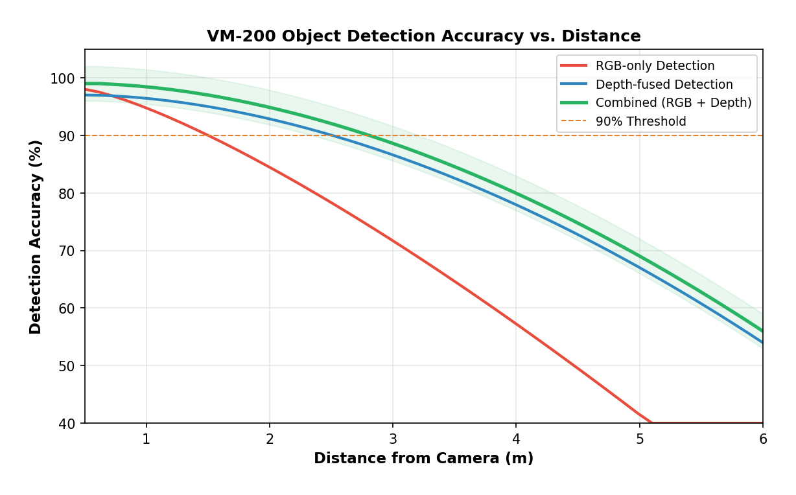
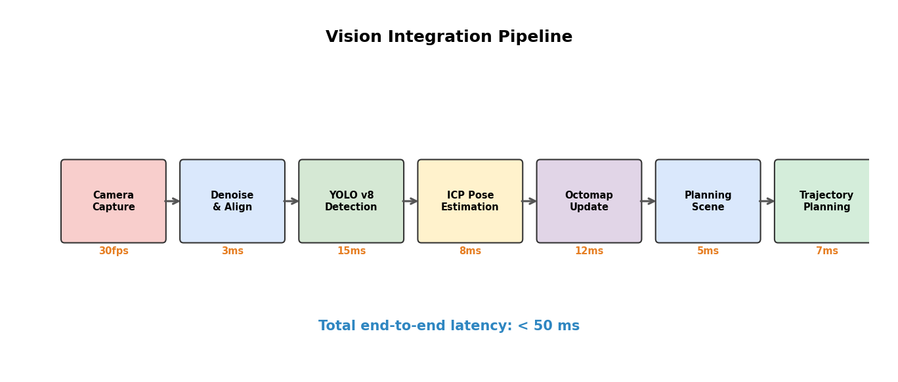

The CoBot Vision Module VM-200 is Contoso Robotics' integrated machine vision solution, purpose-built for the CoBot Pro 500 and CoBot Pro 700 collaborative robot platforms. The VM-200 combines a high-resolution industrial camera, structured light projector, and onboard AI inference engine into a single, robot-mountable unit — eliminating the cost, complexity, and integration risk of third-party vision systems. This technical brief covers the VM-200's capabilities, specifications, integration options, use cases, and performance benchmarks.

The VM-200 architecture consists of four major subsystems:
The VM-200 ships with a library of pre-trained models optimized for common industrial vision tasks. Custom models can be trained on user-provided datasets directly within CoBot Studio IDE using transfer learning, typically requiring as few as 50–100 annotated images for production-grade accuracy.
| Model | Task | Accuracy | Inference Time |
|---|---|---|---|
| PartDetect-v3 | Part presence/absence detection | 99.4% mAP | 12 ms |
| DefectNet-v2 | Surface defect classification (scratch, dent, stain) | 97.8% F1-score | 18 ms |
| BarcodeReader-v4 | 1D/2D barcode and Data Matrix reading | 99.9% read rate | 5 ms |
| DimCheck-v1 | Dimensional measurement (length, width, diameter) | ±0.05 mm accuracy | 22 ms |
| BinPick-v2 | Bin picking pose estimation (6-DoF) | 98.2% grasp success | 35 ms |

| Parameter | Value |
|---|---|
| Sensor Resolution | 5 MP (2592 × 1944) |
| Sensor Type | Global shutter CMOS, 3.45 µm pixel pitch |
| Frame Rate | 30 fps (full resolution), 60 fps (1296 × 972 ROI mode) |
| Lens | C-mount, 8 mm fixed focal length (12 mm and 16 mm options available) |
| Working Distance | 200–800 mm |
| Field of View (at 400 mm) | 320 mm × 240 mm |
| 3D Depth Resolution | 0.1 mm at 400 mm working distance |
| AI Compute | NVIDIA Jetson Orin NX, 100 TOPS (INT8) |
| Interface | GigE Vision, USB 3.0, EtherCAT (via CoBot Pro control cabinet) |
| Power | 24 V DC, 25 W (supplied by CoBot Pro control cabinet) |
| Dimensions | 85 mm × 65 mm × 45 mm |
| Weight | 320 g |
| IP Rating | IP54 (IP67 housing option available) |
| Operating Temperature | 0°C to 50°C |

The VM-200 mounts directly to the CoBot Pro tool flange using the included ISO 9409-1-50-4 adapter. Power and data are routed through the internal cable harness — no external cables are required. The robot's kinematic model automatically compensates for the camera offset.
For stationary inspection tasks, the VM-200 can be mounted on a separate bracket above the workspace. In this configuration, the GigE Vision interface connects the camera to the CoBot Pro control cabinet or an external PC running CoBot Studio IDE.
The VM-200 publishes standard ROS 2 sensor_msgs/Image and sensor_msgs/PointCloud2 topics, enabling seamless integration with custom perception pipelines. For architecture details on the ROS 2 perception stack, see the Perception Pipeline Design document in the Engineering documentation.
The VM-200's structured light projector generates dense 3D point clouds, enabling the BinPick-v2 model to estimate 6-DoF grasp poses for randomly oriented parts. Cycle times of 3.5 seconds per pick (including image capture, inference, and robot motion) have been achieved with the CoBot Pro 700 in production environments.
DefectNet-v2 detects surface defects as small as 0.3 mm across painted, machined, and molded surfaces. Combined with the DimCheck-v1 dimensional measurement model, the VM-200 replaces manual visual inspection stations with 98% fewer escapes.
BarcodeReader-v4 reads 1D barcodes, QR codes, and Data Matrix codes at any orientation, even on curved or reflective surfaces. Read rates exceed 99.9% in production environments, supporting full part traceability for regulated industries.
The following benchmarks were measured on a CoBot Pro 700 with VM-200 mounted at the tool flange, operating in a standard factory lighting environment (500 lux ambient):
| Benchmark | Result |
|---|---|
| Part detection throughput | 30 parts/second (PartDetect-v3, 2D mode) |
| Bin picking cycle time | 3.5 seconds/pick (BinPick-v2, including robot motion) |
| Defect detection false positive rate | 0.2% (DefectNet-v2, 10,000-image test set) |
| Barcode read rate | 99.92% (BarcodeReader-v4, mixed code types) |
| 3D point cloud generation | 85 ms per frame (full resolution, 0.1 mm depth) |
| End-to-end latency (capture to result) | 45 ms (PartDetect-v3, GigE Vision path) |
To install and configure the VM-200 on your CoBot Pro, follow the step-by-step instructions in the Vision Module Setup Guide from Contoso Robotics Support. The guide covers physical mounting, cable connections, camera calibration, and running your first detection job in CoBot Studio IDE.
For questions about custom model training, advanced integration scenarios, or volume pricing, contact your Contoso Robotics sales representative or email vision-support@contoso-robotics.com.
Document version 1.2 | Last updated: 2025-02-01 | Contoso Robotics Marketing